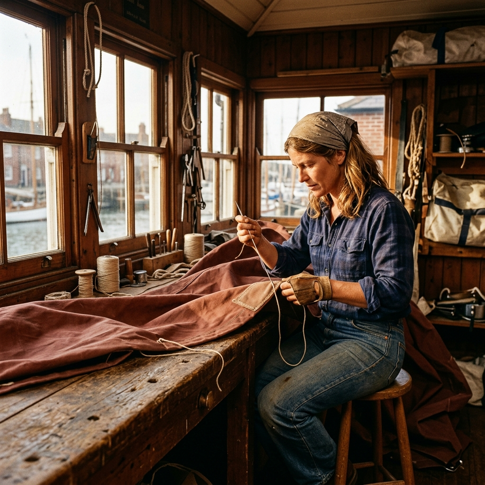
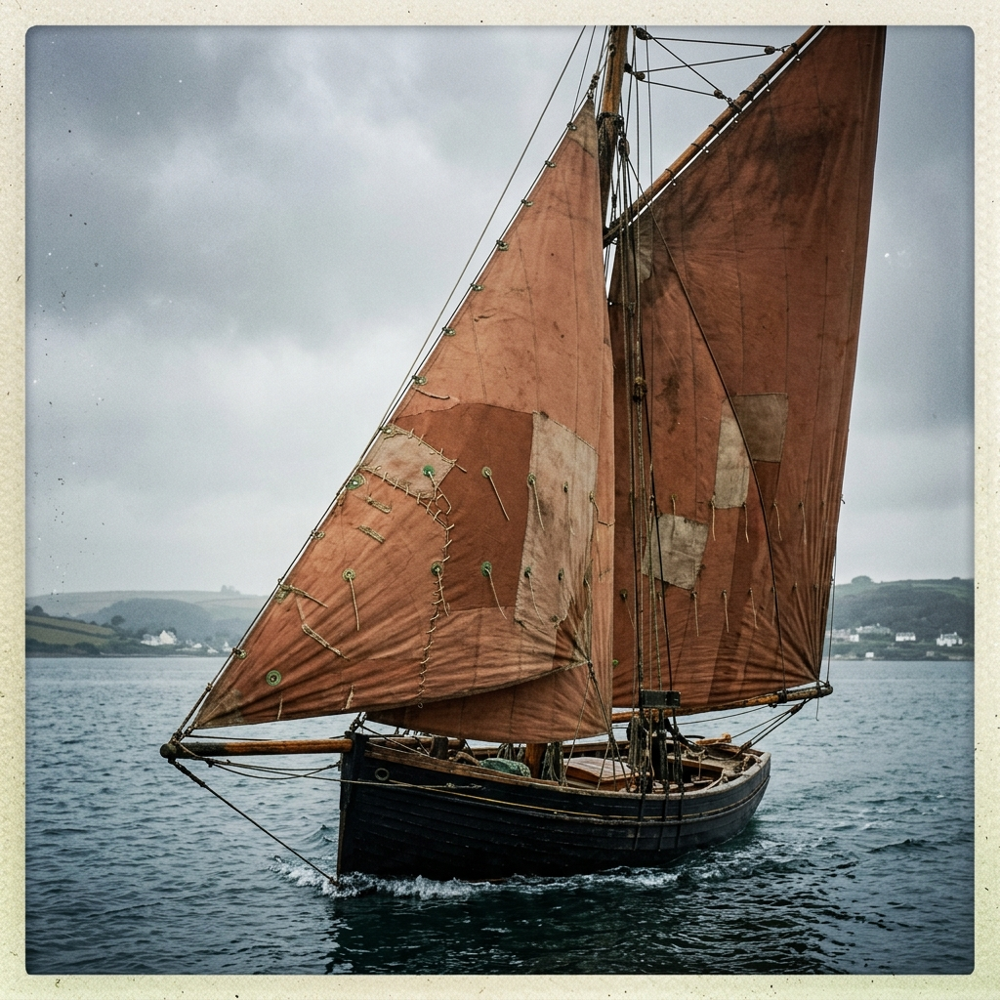
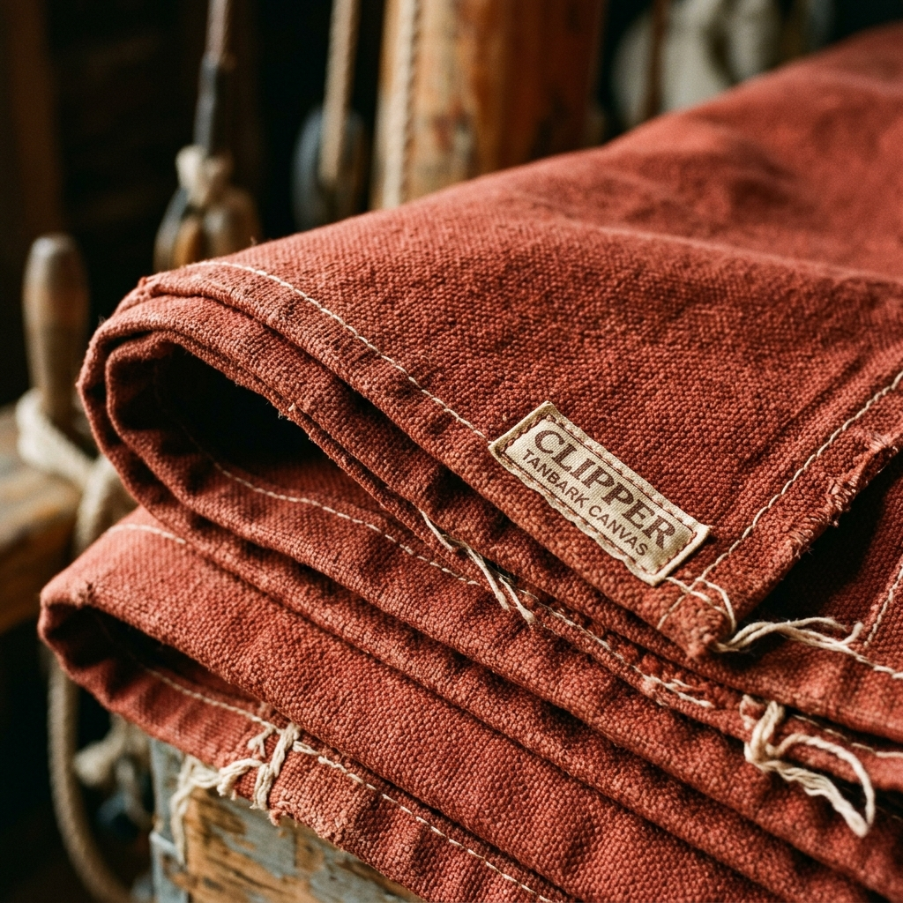

Hull & Hem Sailmenders
Hull & Hem Sailmenders
Notes from the cutting bench.
Our public logbook recording notable repairs, thoughts on traditional materials, and the daily life of a Cornish sail loft.

Repair of the month: Grace of Percuil
This July, the heaviest bag to cross the threshold of the signal box belonged to the owners of Grace of Percuil, a stunningly maintained 1932 Falmouth Working Boat. She is a heavy, demanding vessel that carries a massive spread of canvas, and her mainsail takes an extraordinary amount of punishment during the season's regattas. The owners sent the sail to us after suffering a severe blowout along the foot, right where the canvas meets the boom, tearing through two layers of heavy reinforcement.
The repair required stripping back nearly three metres of damaged cloth and entirely rebuilding the lower section. We used heavy 8oz tanbark Dacron to ensure the new panels could withstand the tremendous shock loads that a working boat rig generates. Because the original canvas had faded over a decade of hard use, we carefully selected a specific roll of tanbark from our Clipper Canvas stock that offered the closest tonal match without attempting to hide the fact that a significant repair had taken place. A visible, robust repair is part of a working boat's honest history.
The entire new section was laid in and secured using the Singer 45K. We then applied the Ellery double-run across every single seam, locking it down with heavily waxed Barbour thread. The final touch involved hand-stitching a new heavy leather chafe guard over the tack cringle. The job required immense physical effort to manipulate the sheer bulk of the sail on the bench, but seeing it shipped back in a GWR stamped bag, ready for another decade of racing, makes the aching shoulders entirely worthwhile.



Materials list:
- 8oz Clipper Canvas Tanbark Dacron
- V138 Waxed Barbour Thread
- 3mm English Bridle Leather (Chafe Guard)
- Hand-forged Brass Tack Cringle
Marta's field notes
Why I left the Falmouth loft
I learned my trade at a large, highly respected commercial loft in Falmouth, and I owe them a great deal. However, the commercial reality of a large yard meant we simply could not accept small jobs. I constantly watched decent, fixable cruising sails being written off and sent to landfill simply because patching them would not clear the yard's minimum financial charge. I opened Hull & Hem specifically to serve the skippers who were being turned away, proving that careful, small-scale repair is both viable and deeply necessary.
Sourcing tanbark from Fowey
Finding the right shade of tanbark is surprisingly difficult. Modern manufacturers often produce a bright, synthetic red that looks entirely wrong on a traditional rig. After years of testing, we exclusively use Clipper Canvas, sourced from their facility in Fowey. Their dye process produces a deep, earthy red that beautifully mimics the old bark-tanned cotton sails of the nineteenth century. It possesses a richness and depth that simply cannot be replicated by cheaper, mass-produced synthetic alternatives.
What breaks first on a gaff mainsail
If you sail a gaff rig, pay close attention to the peak and throat. The sheer twisting force exerted by the gaff jaws and the peak halyard almost always causes the first major failure. We see it constantly: the stitching along the headboard begins to chafe against the mast, or the batten pockets near the leech start to tear under the immense compression loads. Preventative leathering and a heavy double-run on those specific seams can easily add three years to the working life of the canvas before a major blowout occurs.
Subscribe to the logbookCredentials & accreditations
When you entrust us with a sail that might cost thousands of pounds to replace, you need absolute certainty that the work will be executed to the highest professional standards. Marta completed her formal IYT Sailmaker Apprenticeship in Falmouth in 2007, spending four years mastering both modern machining and traditional hand-working techniques under master sailmakers. Hull & Hem has been a proud, active member of the Association of British Sailmakers since 2013, adhering strictly to their codes of practice and quality standards for maritime textiles.
Furthermore, we are an approved supplier within the Cornwall Marine Network, regularly taking on specialized repair contracts for local training fleets and heritage trusts. We understand the stringent requirements of marine insurers. To provide our clients with total peace of mind, all canvas held at the signal box is protected by a comprehensive £2,000,000 public liability and goods-in-trust insurance policy brokered through Topsail Insurance, covering your property against fire, theft, and accidental damage while in our care.
Ask for our supplier packContact the loft
We are a working loft, not a retail showroom. Because driving heavy canvas through the Singer requires intense concentration and both hands firmly on the material, we do not answer the telephone while we are stitching. We have found that email is simply the most efficient way to handle enquiries, allowing us to review your photographs and reply with considered, accurate quotes rather than rushing a conversation over the noise of the machines.
Our postal address for all incoming repairs and correspondence is Signal Box 47, Lelant Saltings, Cornwall, TR27 6JG. The workshop operates Tuesday through Saturday, from 08:30 in the morning until 16:30 in the afternoon. Please direct all repair enquiries, subscription questions, or requests for international shipping quotes to our email address: loft@hullandhem.example. We aim to reply to all emails within one working day.
Email the loft